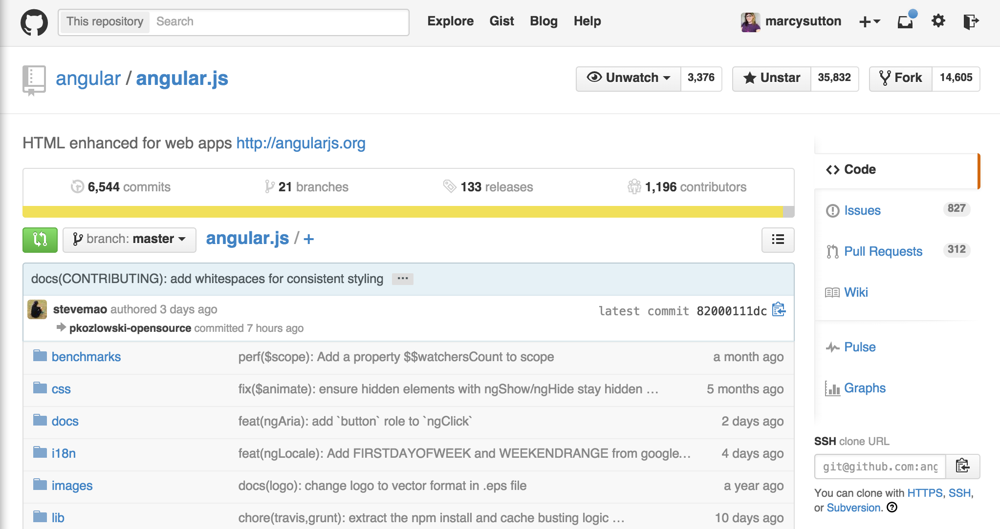

Developments in Angular Accessibility
Marcy Sutton, Seattle, WA
Developer @Substantial, Angular Core Team Member


& Me
Today
- Material Design
- ngAria
- Protractor
- Angular 2.0
Material Design

Angular Material

Focus management
<a ng-href="#/page" ng-click="focusSection()">Page</a>
$rootScope.$on('$locationChangeSuccess', openPage);
function openPage() {
$scope.closeMenu();
if( self.autoFocusContent) {
mainContentArea.focus();
self.autoFocusContent = false;
...
Enforcing text alternatives
Notifying the User

Notifying the User (code)
<aria-status role="status">
<p ng-repeat="message in messages">{{message}}</p>
</aria-status>
switch (matches.length) {
case 0: return messages.splice(0);
case 1: return messages.push('There is 1 match.');
default: return messages.push('There are '
+ matches.length +' matches.' );
Angular ❤ Open Source
ngAria
Accessibility Module in Angular 1.3+
Including ngAria
angular.module('app', ['ngAria'], function($ariaProvider) {
$ariaProvider.config({
tabindex: false
...
<body>
<!-- page content here -->
<script src="angular.min.js"></script>
<script src="angular-aria.js"></script>
</body>
ngAria
Adds support to these directives:
- ngModel
- ngDisabled
- ngShow
- ngHide
- ngClick
- ngDblClick
- ngMessages
ngAria & ngDisabled
<md-checkbox ng-disabled="true" aria-disabled="true"...
.directive('ngDisabled', ['$aria', function($aria) {
return $aria.$$watchExpr('ngDisabled', 'aria-disabled');
}])
ngMessages & ngAria
ngAria & ngMessages
<label>Label <input type="text" minlength="5" /></label>
<div ng-messages="myForm.myField.$error">
<div ng-message="minlength, maxlength">
Your email must be between 5 and 100 characters long
.directive('ngMessages', function() {
return {
link: function(scope, elem, attr) {
if (!elem.attr('aria-live')) {
elem.attr('aria-live', 'assertive');
ngClick
<div ng-click="ohNoYouDidnt()"></div>
ngAria & ngClick
.directive('ngClick',['$aria', function($aria) {
return {
compile: function(scope, elem, attr) {
var nodeBlackList = ['BUTTON','A','INPUT','TEXTAREA'];
if (!elem.attr('role') && !isNodeOneOf(elem, nodeBlackList)) {
elem.attr('role', 'button');
}
if (!isNodeOneOf(elem, nodeBlackList)) {
elem.on('keypress', function(event) {
if (event.keyCode === 32 || event.keyCode === 13) {
scope.$apply(callback);
...
That's a lot of effort...
Just use buttons!
- Node.js command line application
- Runs on WebDriver
- Choose your test framework
- Great for continuous integration
Karl Groves, #a11ycampbay10% of the tests we can run automatically with Tenon.io catch ~67% of the accessibility errors…
Protractor A11Y Plugin
Test your site with:
- Chrome Accessibility Developer Tools
- Tenon.io

Protractor A11Y Plugin: Setup
exports.config = {
plugins: [{
tenonIO: {
options: {
// options.src will be added by the test
},
printAll: false,
},
chromeA11YDevTools: true,
path: 'node_modules/protractor/plugins/accessiblity'
}]
}
Protractor Accessibility
Can I use?
| Library | Pricing | API Key | External Request | No. of Tests |
|---|---|---|---|---|
| Chrome Accessibility Developer Tools | Free | No | No | 14 |
| Tenon.io | Free limited accounts, paid subscriptions | Yes | Yes | 63 |
Automated Testing Strategies
- Check for Labels
- Validate Roles
- Watched ARIA Properties
- Interactions
- Color Contrast
Angular 2.0
Changes in Angular 2.0
- No more Directive Definition Object Link opens in a new window
- No more Controllers
- Works with Web Components
- Bind to properties, not attributes
- No more jqLite DOM wrapper
- ES6 modules
Binding events
<button ng-click="deliverTacos()"
ng-focus="anticipationEvent()">
Give me tacos </button>
<button (click)="deliverTacos()"
(focus)="anticipationEvent()">
Give me tacos </button>
Angular 2.0 on Github
Contribute!

ngAria !== Angular 2.0
Making it better
Resources
All links open in new windows